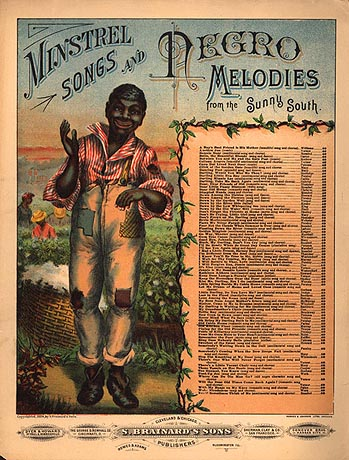

THE OLD CABIN HOME, by T. Paine
Minstrel Songs & Negro Melodies from the Sunny
South
(Cleveland: S. Brainard's Sons, 1885)
As you can gather from the long list of song
titles on the image above, this cover was used
generically for dozens of "Negro Melodies" published by
Brainard's. In other words, what we see here is the literal
"stereotype" of slavery that minstrely provided -- this
same image of a "happy darky" fit all these titles. At
least during the 1840s and 1850s, when blackface minstrelsy
first appeared, the Abolitionists provided a contrasting
set of images in their anti-slavery propaganda: slaves
being overworked, starved, beaten and even tortured, slave
families being torn apart, and so on. By the 1880s, that
competing re-presentation of slavery had, for all purposes,
disappeared from the cultural scene.
Courtesy Sheet Music Collection
Brown University Library
|